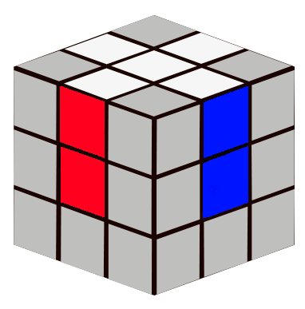

1. Weiße Ecke korrekt einsetzen
Wann wird dieser Algorithmus verwendet?
Dieser Algorithmus wird verwendet, wenn du eine weiße Ecke mit Weiß
oben hast und sie in die untere Ebene einsetzen willst.
Ziel: Die Ecke durch Wiederholen von R' D' R D in die
richtige Position bringen, mit Weiß auf der Unterseite.
Algorithmus:
R' D' R D

Die weiße Ecke rotiert nach unten
Bewegung der Ecke – Bildabfolge:
Start
R'
D'
R
D
E
E
Weiße Ecke unten
2. Erste Ebene komplettieren
Schlüsselalgorithmen für die restlichen Ecken:
- R U R' U'
- U R U' R'
- F R U R' U' F'
3. Obere Ebene orientieren
Orientierungsalgorithmen der oberen Ebene:
- R U R' U R U2 R'
- U R U' R' U' R U R'
4. Letzte Ecken permutieren
Komplexe Permutationsalgorithmen:
- R U' R' U' R U R' F' R U R' U' R' F R2 U' R'
- R2 U R U R' U' R' U' R' U R'
5. Fortgeschrittene Optimierungstechniken
Fortgeschrittene Optimierungstechniken:
- Vorausschauende Positionierung
- Minimierung der Rotationen
- Schnelle Analyse der Würfelstruktur